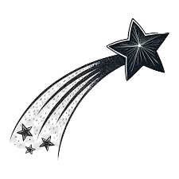

C'est pas normal de
pas POUVOIR TENIR DEBOUT
pendant ses regles

On nous apprend qu’avoir mal pendant ses règles et normal.
Je ne peux pas compter le nombre de personne qui m’ont dit qu’elles avaient « seulement » des vomissement en début de cycle en pensant que c’était normal.
En plus de ça, même après s’être dit que c’était pas normal de ressentir une douleur qui nous empêchait de marchait, les médecins nous remballe, nous disent que si, si, c’est normal.
J’ai rencontré plusieurs personnes qui ont vu des médecins qui leur ont dit qu’elles avait « juste un kyste » qui allait disparaître dans trois mois sans faire d’imagerie ou de test. C’est grave parce qu’on ne peut pas savoir qu’on a un kyste juste par des symptômes et même si on avait réellement un kyste il n’y a pas de certitude qu’il disparaisse en 3 mois ou qu’il ne s’agrave pas. Un autre cas et celui ou un.e médecin connaît un peu l’existence de l’endométriose ou autre est nous envoie faire des radiographie et/ou IRM mais sans nous prévenir de quoi que ce soit.
Sans nous prévenir que ce sera cher,
sans nous prévenir que beaucoup de professionnel.les de la santé ne sont pas formés pour faire ses imageries,
sans nous prévenir ou même sans savoir que certains types d’endométriose sont visible à l’IRM et pas à l’échographie (ou inversement),
parfois même sans nous prévenir que « échographie sub » est une technique qui nécessite la pénétration par voie vaginale d’un appareil.
Je vous épargne une liste exhaustive du manque d’information et de communication autour des douleurs pelviennes, ce paragraphe existe surtout pour se rendre compte que ce n’est pas normal.
Ce n’est pas normal de souffrir « seulement un jour tous les deux cycles », il faut s’occuper de ses douleurs parce que c’est en étant dans ce déni qu’elles peuvent s’installer.
Ok mieux vaut tard que jamais, mais ici, mieux vaut tôt que tard.
Je n’ai pas eu mon diagnostic grâce au médecin, j’ai eu mon diagnostic parce qu’une fille que j’ai rencontré m’a dit que ce n’était pas normal que je sois pliée en deux, même un ou deux jours par cycle.
J’avais déjà vu une médecin pour mes douleurs, elle m’avait dit que j’étais ✨constipée✨ et m’a donné des laxatifs comme traitement. Au bout de la troisième visite j’ai mentionné l’endométriose ce à quoi elle a répondu que c’était « à la mode ».
Après ma deuxième imagerie on m’a dit qu’effectivement j’avais de l’endométriose, mais que je n’étais pas malade.
Pourtant c’est bel et bien une maladie, et même, beaucoup pense que c’est une maladie gynécologique, mais c’est une maladie systémique, qui peut aller dans tous les organes du corps.
L'endométriose n'est pas une maladie affectant seulement les femmes, on peut avoir ses règles et ne pas être une femme. Trop peu de site prenne en compte
les personnes trans, la plupart des phrases catchy s'adresse aux femmes et parle de l'endométriose comme d'une maladie féminine.
Je me rends compte aussi souvent d'à quel point cette maladie est construite dans le capitalisme, par les aliments modifiés qui pausent problèmes,
le besoin d'organiser toute sa vie pour essayer d'être adapté au rythme imposé, etc.
Également par l'article de Juliet Drouar j'ai trouvé très juste sa façon de présenter l'assujetissement des femmes au stress et les conséquences générales.
J'ai pu voir et ait toujours soupçonné les traumatismes personnels et inter-générationnels de faire partie des douleurs chroniques, mais les voir en système général fait encore plus sens.